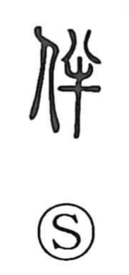

伴

Uncategorized
Kun: tomonau, tomo, tsure | On: han, ban
to accompany ・ companion ・ attendant
Explanation
Shirakawa reads 伴 as a picto-phonetic graph: the person element signals a human relationship, while 半—originally the image of an ox cut in two for sacrificial offering—provides the sound and suggests a paired halving. From the sense of two parts proceeding together, the character comes to mean being with another: a companion or attendant, and by extension to accompany, to go along or follow.